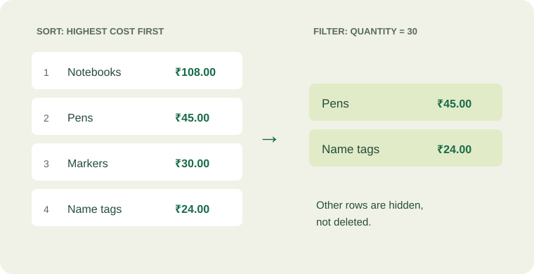

Learning objective
By the end of this lesson
Sort complete records and filter without deleting data.
Sort whole records
Which supply takes the biggest share of the budget? Sort by Line total, largest to smallest, to put that answer first.
- Select A1:D5, including the header row but excluding the Total row.
- Open the Data tab and choose Sort.
- Confirm that your data has headers. Choose Line total as the sort column.
- Choose Largest to Smallest and apply the sort.
Notebooks should appear first at ₹108.00. The quantity and cost must travel with the item. Sorting only one column can pair the wrong values with a supply. If Excel asks, choose to expand the selection to include the complete records.
Keep a safe copy
Save a copy before reorganizing an unfamiliar dataset. Immediately check the first few rows after sorting, and use Undo if a record’s values no longer match.

| Item | Quantity | Line total (INR) |
|---|---|---|
| Notebooks | 24 | 108.00 |
| Pens | 30 | 45.00 |
| Markers | 6 | 30.00 |
| Name tags | 30 | 24.00 |
Filter to focus
Filtering temporarily hides records that do not meet your condition. It does not delete them.
- Select A1:D5 and turn on Filter from the Data tab.
- Open the filter control in the Quantity heading.
- Keep only the value 30 selected and apply it.
- Inspect the two visible records: Pens and Name tags.
- Clear the Quantity filter to show all four supplies again.
Be careful with totals when rows are hidden: our =SUM(D2:D5) still includes the hidden rows, so it remains ₹207.00. For a total that responds to filtering, you can explore SUBTOTAL after this course.
Clear all filters before moving to Lesson 5 so the chart includes every supply.
YOUR TURN
Make it stick
After filtering Quantity to 30, how many supply records are visible? Has the overall SUM changed?
Check your thinking
Two records remain visible: Pens and Name tags. The SUM still returns ₹207.00 because it includes hidden rows. Clear the filter before continuing.
Keep exploring: Microsoft: sort data in a range or table.
Finished reading and practicing? Mark this lesson complete to update your progress.